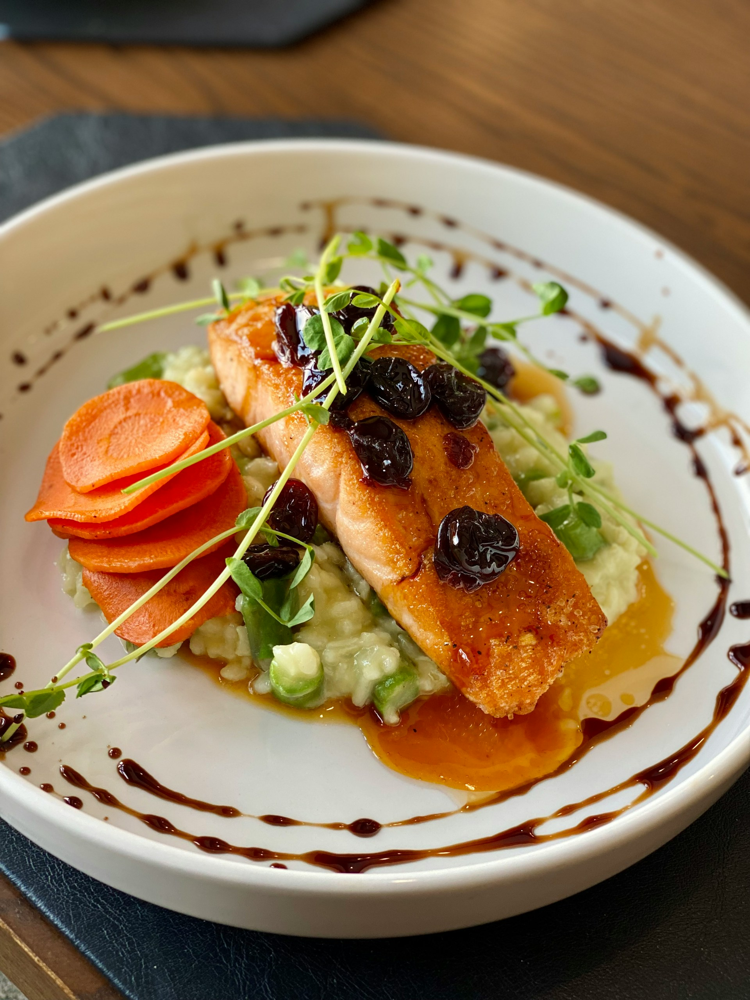

Baked Dijon Salmon

Photo by
Sara Nichols
on
Unsplash
Description
Baked Dijon Salmon is a simple yet elegant dish featuring tender,
flaky salmon coated in a tangy Dijon mustard glaze. It’s rich in flavor,
quick to prepare, and perfect for a healthy, satisfying meal.
- Flaky, oven-baked salmon
- Bold, tangy Dijon flavor
- Light, fresh, and protein-packed
Ingredients
- ¼ cup butter, melted
- 3 tablespoons Dijon mustard
- 1 ½ tablespoons honey
- ¼ cup dry bread crumbs
- ¼ cup finely chopped pecans
- 4 teaspoons chopped fresh parsley
- 4 (4 ounce) fillets salmon
- salt and pepper to taste
- 1 lemon, for garnish
Steps
- Preheat your oven to 400°F (200°C).
- In a small bowl, whisk together the butter,
Dijon mustard, and honey until smooth. Set aside.
- In a separate bowl, combine the bread crumbs, chopped pecans, and parsley.
- Lightly brush each salmon fillet with the honey mustard mixture.
- Evenly sprinkle the bread crumb mixture over the top of each fillet.
- Bake for 12–15 minutes, or until the salmon flakes easily with a fork.
Season with salt and pepper, then serve with a wedge of lemon.
Home